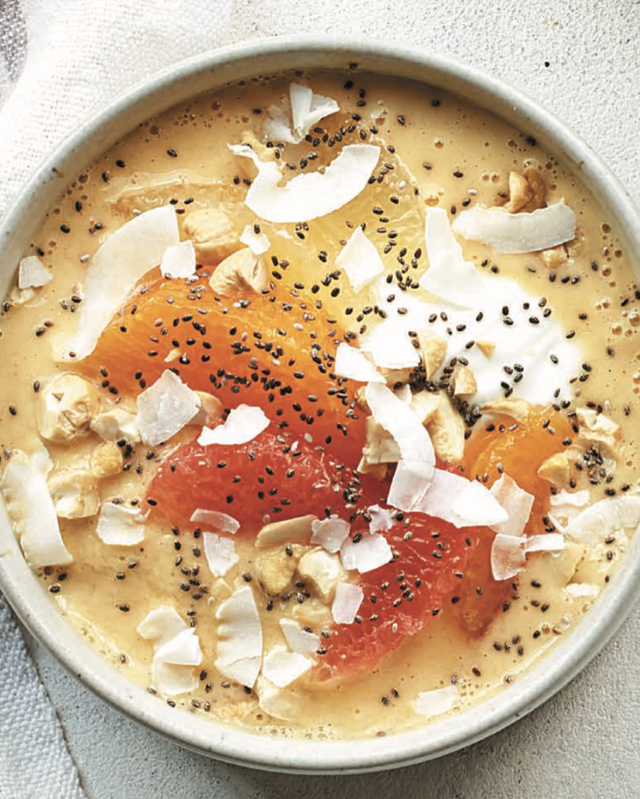

Citrus-Pineapple Smoothie Bowl

Description
This smoothie bowl is a fun way to switch up your routine. It features vitamin C–rich citrus fruit, heart-healthy cashews, and gut-healthy Greek yogurt.
Ingredients
- 1/2 cup fat-free Greek yogurt
- 1/2 cup frozen pineapple chunks
- 1 tsp vanilla extract
- 1/2 navel orange, segmented
- 1/2 ruby grapefruit
Steps
- Place all ingredients into a blender.Blend until the mixture is smooth, and divide between 2 bowls.
- Top with more orange and grapefruit, plus chia seeds, unsweetened coconut flakes, and chopped cashews.
Nutrition: 240 cal, 12 g pro, 31 g carb, 5 g fiber, 19 g sugars ( 0 g added sugars), 8 g fat ( 4 g sat fat)